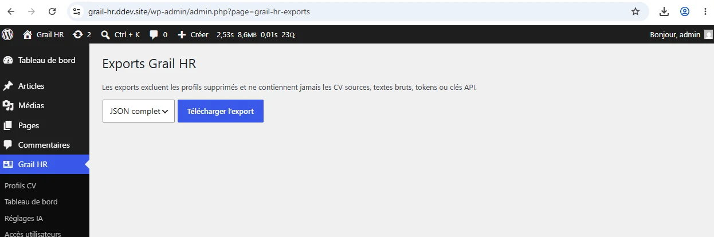
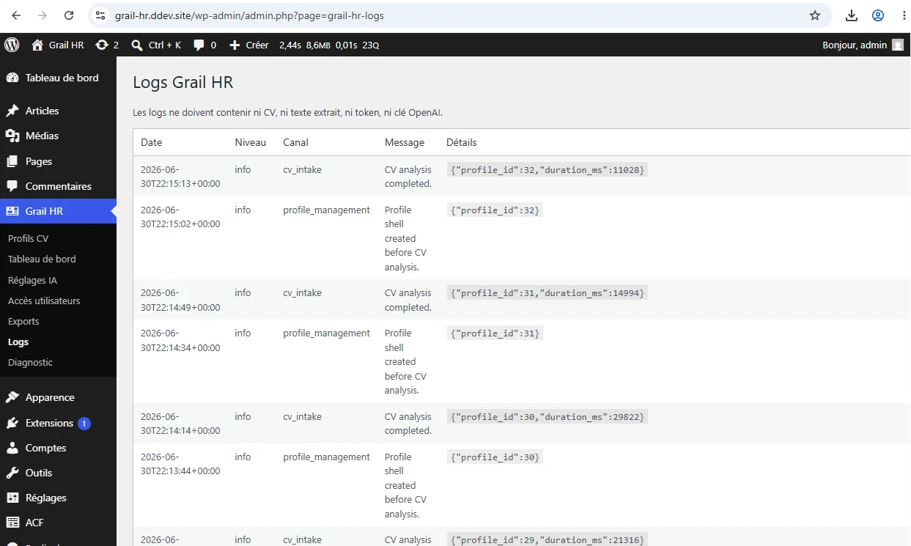

Configure, monitor and operate the prototype.
The WordPress admin complements the Nuxt application: AI settings, user access, exports, logs and diagnostics.





The WordPress admin complements the Nuxt application: AI settings, user access, exports, logs and diagnostics.

